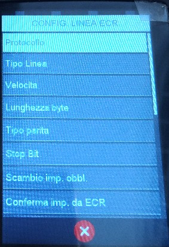
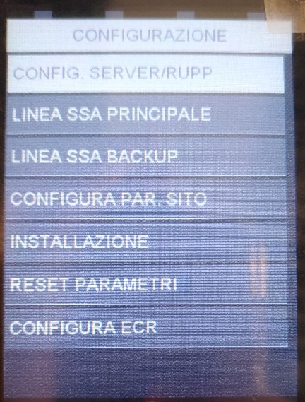
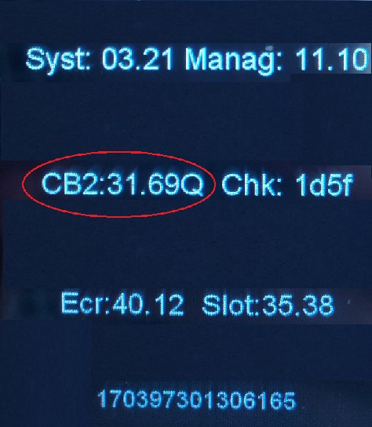

Manuale Configurazione SSA CIGIERRE connettività SSL
Ingenico - Lane 3000
Stato
Utilizzato da
Redatto da RCC
Approvato da D.
Indice generale
. Scopo e campo di applicazione............................................................................................3
. Accensione e Riavvio...........................................................................................................3
. Accensione................................................................................................................................3
. Riavvio......................................................................................................................................3
. Attivazione bancaria............................................................................................................4
. Parte Pos: configurazione SSA manager.......................................................................................4
. Attivazione manuale da pos.........................................................................................................6
. Configurazione scambio importo..........................................................................................7
. CONFIGURAZIONE MANUALE......................................................................................................7
. Reset dati bancari...............................................................................................................8
5. GESTIONE SERVIZIO SIGNA.....................................................................................................9
. DISABILITAZIONE SIGNA............................................................................................................9
. RIMOZIONE FIRME SIGNA RIMASTE SUL POS..............................................................................9
6. Parte Pos: CONFIGURAZIONE SIGNA.......................................................................................10
. Signa: Configurazione...........................................................................................................10
. Signa: INVIO FIRME RIMASTE SUL POS.................................................................................10
. Signa: RIMOZIONE firme rimaste sul pos................................................................................11
5. CONFIGURAZIONE BPE (BUONI PASTO ELETTRONICI)......................................................12
- Configurazione Amoney BPE....................................................................................................12
- VERIFICHE FUNZIONAMENTO..........................................................................................13
7. Release CB2 e Release Applicazioni..................................................................................14
Release CB2...............................................................................................................................14
.
Scopo e campo di applicazione
Questo documento descrive le modalità di configurazione SSA del pos Ingenico Lane 3000 per il
gruppo CIGIERRE tramite connettività SSL.
.
Accensione e Riavvio
.
Accensione
Accensione : collegare l'alimentatore del pos. Il pos si troverà nella schermata di idle dopo
circa 90 secondi.
.
Riavvio
Riavvio: premere contemporaneamente il tasto giallo e il tasto punto.
.
Attivazione bancaria.
.
Parte Pos: configurazione SSA manager

Per accedere al menù SSA manager e procedere con la
configurazione per l’attivazione:
- premere tasto F
- selezionare SSA MANAGER
- selezionare CONFIGURAZIONE – psw 2010.
Nel menù configurazione si trovano 7 voci, queste
verranno descritte dettagliatamente nei punti 3-11
dell’elenco sottostante;
4. selezionare Config server rupp:
• Slot → selezionare lo slot interessato: Argentea per lo scambio importo seriale, Argentea
ETH per lo scambio importo tramite tcp/ip (maggiori dettagli nel capitolo 4);
• Merchant server: compare ARG-!-NTSV.AMON Premere tasto verde per confermare;
- RUPP: inserire il rupp assegnato, per la lettera iniziale utilizzare la tastiera visualizzata a
- video, per i valori numerici utilizzare la tastiera numerica del pos. Premere tasto verde
- per continuare.
- Quando il pos ritorna in slot, premere tasto rosso, dopo di che, verrà richiesto se si
- desidera salvare le modifiche, premere tasto verde per confermare.
5. Selezionare SSA Principale:
- selezionare Tipo Linea: scegliere Ethernet e confermare con tasto verde;
- selezionare Tipo Protocollo: scegliere tra TCP/IP + SSL e Confermare con tasto
- verde;
- inserire indirizzo IP: inserire 188.94.133.35. Confermare con tasto verde;
- inserire Porta: inserire 44391. Confermare con tasto verde;
- inserire Timeout socket: 10. Confermare con tasto verde;
- inserire Timeout Ricezione: 10. Confermare con tasto verde;
- inserire CERT SSL: inserire 12. Confermare con tasto verde;
- il pos ritornerà in tipo linea, premere tasto rosso, dopo di che verrà richiesto se si
- vogliono salvare le modifiche. Confermare con tasto verde.
6. selezionare SSA backup:
- selezionare Tipo Linea: scegliere Ethernet e confermare con tasto verde;
- selezionare Tipo Protocollo: scegliere tra TCP/IP + SSL e Confermare con tasto
- verde;
- inserire indirizzo IP: inserire 188.94.133.35. Confermare con tasto verde;
- inserire Porta: inserire 44391. Confermare con tasto verde;
- inserire Timeout socket: 10. Confermare con tasto verde;
- inserire Timeout Ricezione: 10. Confermare con tasto verde;
- inserire CERT SSL: inserire 12. Confermare con tasto verde;
- il pos ritornerà in tipo linea, premere tasto rosso, dopo di che verrà richiesto se si
- vogliono salvare le modifiche. Confermare con tasto verde.

7. selezionare config. Par sito → verrà mostrato a
display IP DINAMICO con scelte SI’ o NO.
Selezionare NO , confermare con tasto verde e
procedere con la configurazione:
- inserire indirizzo IP: è l’indirizzo Ip assegnato al pos, i valori vanno inseriti dal
- tastierino del pos. Confermare con tasto verde;
- inserire Subnet Mask: i valori vanno inseriti dal tastierino del pos. Confermare con tasto
- verde;
- inserire Gateway 1: i valori vanno inseriti dal tastierino del pos. Confermare con tasto
- verde;
- inserire Gateway 2: lasciare vuoto e Confermare con tasto verde;
- il pos ritornerà in IP dinamico e , premere tasto rosso, andare al punto 8
8. una volta completata la configurazione di config. Par sito viene richiesto
automaticamente se si vuole eseguire l’attivazione. Premere tasto verde per confermare
l’attivazione bancaria. Durante questa procedura vengono scaricati sul pos il/i termid
prediposti ad essere caricati sul pos. Tasto rosso se si vuole annullare l’operazione.
9. La voce INSTALLAZIONE permette di far partire l’attivazione manualmente.
.
Attivazione manuale da pos
Per far partire il primo DLL:
1. premere Tasto F;
2. selezionare SSA MANAGER – CONFIGURAZIONE (2010)
3. selezionare INSTALLAZIONE e confermare con tasto verde (premere le frecce in basso
a destra sul pos per scorrere le varie opzioni della tabella)
.
Configurazione scambio importo
.
CONFIGURAZIONE MANUALE

Lo scambio importo dipende dallo slot che si sceglie nel menù SSA
MANAGER:
• scegliere Argentea per lo scambio importo tramite seriale
Per modificare a mano le impostazione dello scambio importo:
premere tasto F1;
- selezionare Installatore (0107);
- selezionare Configura;
- selezionare Dati Linea ECR
4. CONFIGURAZIONE PROTOCOLLO ETHERNET ARGENTEA 25
- protocollo: 25
- tipo linea: modalità di scambio importo ETH;
- porta (solo per tipo linea ETH): 40001
- Scambio Imp. Obbl: impostare su SI. Le operazioni di pagamento possono essere
effettuate unicamente tramite scambio importo da cassa.
.
Reset dati bancari

Per resettare solamente i termid e non i parametri di configurazione:
- premere TASTO F
- selezionare SSA MANAGER – CONFIGURAZIONE (2010)
- selezionare RESET PARAMETRI
- 1a domanda, richiesta di cancellazione dati pos → PREMERE tasto ROSSO il alla
- prima richiesta di cancellazione dati pos
- 2a domanda, richiesta reset dati bancari → PREMERE tasto verde
viene eseguita un RESET PARZIALE e cioè verranno eliminati solamente i termid presenti
sul pos, mentre verranno lasciati invariati i parametri di configurazione.
Il Terminale torna da solo sulla schermata iniziale e mostra la scritta “POS INIZIALIZZATO”
5. GESTIONE SERVIZIO SIGNA
Il pos Ingenico Lane 3000 permette di apporre la firma del pagamento direttamente a display
del pos e l’invio degli scontrini digitali a sistema SIGNA.
SIGNA è abilitato di DEFAULT tramite le impostazioni standard in connessione SSL via internet.
Se NON si desidera utilizzare il sistema SIGNA va DISABILITATO da MENU.
Se le impostazioni da utilizzare non sono quelle di default, va configurato opportunamente.
.
DISABILITAZIONE SIGNA
• Se NON si desidera utilizzare il sistema SIGNA va DISABILITATO da MENU.
• Per accedere al menù SIGNA e procedere con la configurazione:
• premere tasto Grigio (sopra il tasto rosso)
- selezionare SIGNA - psw 7446;
- per la configurazione:
- selezionare MENU SIGNA
- selezionare PARAM.FIRMA
- selezionare NO
- premere tasto rosso e confermare con tasto verde le modifiche.
6.
Parte Pos: CONFIGURAZIONE SIGNA
Il pos permette di apporre la firma del pagamento direttamente a display del pos. La firma va
poi inviata al server SIGNA, per questo, una volta eseguita l’attivazione, va configurato il menù
SIGNA.
1.
Signa: Configurazione
Per accedere al menù SIGNA e procedere con la configurazione:
• premere tasto Grigio (sopra il tasto rosso)
- selezionare SIGNA - psw 7446;
- per la configurazione:
- selezionare MENU SIGNA
- selezionare PARAM.LINEA TML - psw 7454
- CONFIGURAZIONE CONNESSIONE PRINCIPALE
- selezionare PARAMETRI LINEA 1; i parametri di configurazione sono
- tipo linea: selezionare ETHERNET e premere tasto verde;
- tipo protocollo: selezionare TCP/IP + SSL e premere tasto verde;
- ID. CERT.SSL3 : confermare 27 e premere tasto verde
- NUM TELEFONICO/ IP: confermare 159.122.142.212 e premere tasto verde;
- WEB SERVICE: confermare /idrm_argentea/wsincoming/wsincoming.aspx e
- premere tasto verde;
- PORTA: confermare 12105 e premere tasto verde;
- ritorna in tipo linea, premere tasto rosso e confermare con tasto verde le modifiche.
A questo punto Signa è configurato e le firme vengono inviate in maniera corretta.
5. CONFIGURAZIONE BPE (BUONI PASTO ELETTRONICI)
1. Configurazione Amoney BPE
• Per accedere al menù SSA manager e procedere con la configurazione per l’attivazione:
- premere tasto F/GRIGIO
- selezionare AMONEYBPE
- selezionare CONFIGURAZIONE – psw 72619
- RUPP: inserire il RUPP corrispondente (per cancellare modificare tasto giallo).
- Premere il tasto verde per salvare
- Tipo Connessione: Ethernet tasto verde per salvare e passare alla voce successiva
- Protocollo di rete: TCP/IP + SSL tasto verde per salvare e passare alla voce
successiva
◦ Conn Principale:
▪ IP server BP: 188.94.133.35 tasto verde per salvare e passare alla voce
- successiva
- Port server BP: 44390 tasto verde per salvare e passare alla voce successiva
- Conn Bakcup:
▪ IP server BP: 188.94.133.35 tasto verde per salvare e passare alla voce
- successiva
- Port server BP: 44390 tasto verde per salvare e passare alla voce successiva
- Porta ECR: se non già inserita, inserire 02571 tasto verde per salvare e passare alla
- voce successiva
- Timeout: 120 tasto verde per salvare e passare alla voce successiva
- Eccedi Importo: OFF tasto verde per salvare e passare alla voce successiva
- Standalone: ECR tasto verde per salvare e passare alla voce successiva
- Protocollo V2: ON tasto verde per salvare e passare alla voce successiva
- Porta SSA: 44391 tasto verde per salvare e passare alla voce successiva
- •
6. VERIFICHE FUNZIONAMENTO
Test connessione TELNET a servizio SSA ARGENTEA
F1 → SERVIZIO → MENU TELEFONO → TELNET –> SSL - SI → IP LIBERO
INDIRIZZO IP: 188.94.133.35
PORTA: 44391
IL POS DEVE riuscire a connettersi tramite Telnet!
Al termine dell’installazione è necessario procedere con le seguenti verifiche:
- TEST BANCARIO: effettuare un totali host (f1 – cassiere – totali host);
- TEST SCAMBIO IMPORTO:
- TEST PAGAMENTO ELETTRONICO.
- Da cassa viene chiamato pagamento e pos deve mostrare richiesta di
inserimento/passaggio carta;
◦ completare pagamento se possibile e contattare Argentea per verificare l’invio
- corretto dello scontrino.
- TEST BPE:
- da cassa verrà chiamato pagamento bpe, il pos deve mostrare richiesta di inserimento
carta;
◦ completare transazione, anche KO: per simulare un pagamento OTP Edenred, alla
- richiesta pagamento BPE
- premere “TASTO VERDE”
- inserire “00000” (5 volte 0)
- premere verde per eseguire pagamento:
- se Edenred non è abilitato, risposta “EMETTITORE NON ABILITATO”
- se Edenred è abilitato, risposta “ID RICHIESTA NON VALIDO” (questo perché OTP
inserito non corrisponde a nessuna transazione utente valida)
7. Release CB2 e Release Applicazioni
Release CB2
Per visualizzare la release CB2:
- premere tasto F1;
- selezionare SERVIZIO;
- selezionare RELEASE SW: la seconda linea mostra la release CB2 che è caricata a bordo
del pos.

ATTAULE RELEASE CORRETTA A FINE ULTIMO ATTUALE AGGIORNAMENTO DEVE ESSERE:
- CB2: 32.40A
- Ecr: 44.55
- Slot: 35.61_p